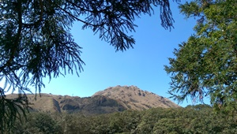
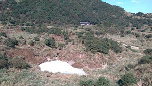
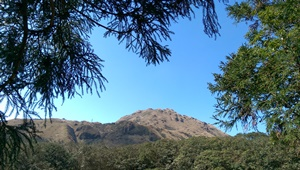
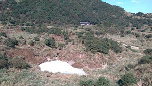
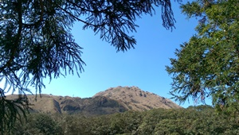
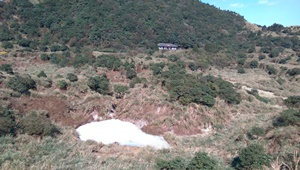
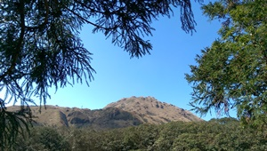
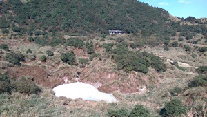
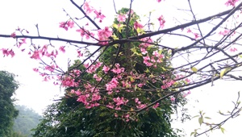
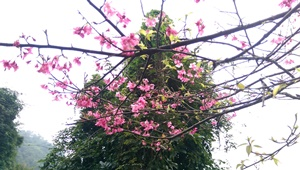

 



想不到要怎麼做卡片，最後決定發揮自己的專長給你卡片所以寫了一個APP會不會覺得很low阿 哈哈。
不知不覺地超過半年了，跑跑跳跳許多地方，妳也又老了一歲，雖然看起來跟我差不多。然後我又天生內向害羞不愛講話，妳一開始應該很辛苦吧!一個安靜的帥哥跟會人來瘋的女友哈哈~
妳會記憶和在意奇怪的點，但是有時候我只是隨口說說的，但妳會在意，不小心傷害了妳的玻璃心真對不起QQ，我會注意改進的。但是你一定都要跟我說，不准偷偷哭泣。
家裡有很多美女妳也是美女覺得很混亂，但是我會記住誰是肉圓美女的^.^
也很謝謝妳體諒我當兵不能一直陪妳，還要陪我講電話(雖然有三分之二都是你在說!哈哈)
好啦 重點是
生日快樂 !!!!!!
愛妳喔~!! 啾~

每次都說我沒在聽沒再記，我現在就記給你看~.~
下面是我們的回憶錄喔!!
這天沒什麼照片，不過應該是我們第一次吃福勝亭吧吧吧!!!
也不太記得這天幹了什麼，但是我覺得電影的機率很高哈哈哈~
第一篇回憶好像有點落漆 ㄎㄎ love you~


不知道為什麼直接飛到了二月@@
應該是我沒拍照吧?!
那時候幾乎每次約會都下雨吧，覺得難過
來嘗試聽說好吃的早餐
好啦 我知道第二篇回憶也怪怪的...


這算是我們第一次出遠門吧，第一個口袋
然後來陪小帥哥爬山，雖然妳有點廢廢的哈哈哈
沒幾步就汗如雨下了QQ
不過這次走了好久，擎天崗、娟絲瀑布、冷水坑、牛奶湖
對新手好像有點多拉，好棒棒，謝謝甜不辣願意陪我走
最後 你還記得妳欠我$500嗎 :)
還去了人山人海的淡水，吃西堤 可怕的大生菜
有人還累到睡著了~ 辛苦了
然後終於可以打多一點了哈哈 請見下回


是個櫻花綻放的季節
是大同山，我也沒去過，他的入口真的很詭異耶
然後妳當然還是上氣不接下氣 ㄎㄎ
還有妳嫌棄我綁頭髮
那天忘記走多久了 不過還是看到了漂亮的櫻花
還拍到好多漂亮的照片，還有看花的美女
雖然回去的時候走了超級無敵長的路 不喜歡平地 好累喔哈哈
走完之後跑去買鞋子了，其實我不太確定是不是那天 但是印象中我身上有個袋子~
本來晚上是要去看大同山夜景的但是好像找不太到
後來妳就說要去虎頭山了~ 然後兩個地方傻傻分不清 最後來是到了拉
不過下雨起霧有點煞風景，還有半路認親的可愛小黑
又結束了開心的一天

 



今天是著風和日麗的好日子，我們到了八里玩耍
借了好爛的腳踏車(我的拉)
騎了一些我沒去過的地方 開心
看了小螃蟹 好久沒吃一口蟹了
還去了十三行看怪怪的東西 有人還偷偷在樓梯拍帥哥:)
把我拍得有點憂鬱小生 人家狄卡的都拍得超美的
還好夠帥撐得住場面~~


爬山again!!!!
這次應該是我充分體會到什麼叫做地圖障礙了吧
每次都在路口才在跟我改變方向...
傷心事就不多說了 哈哈
充滿瀑布的滿月圓
這次應該好走很多了吧 ㄎㄎ 都是樹蔭
我們停在瀑布那裏好久好久好久喔 觀察奇怪的鳥
然後有人眼睛一直有問題看不到魚.......
看不到自己同伴是有點奇怪拉
好像有人問過我是不是每隻魚的肚子都是白色的= =
最後又跑去了三峽老街賞櫻了，三峽的好大好紅喔。


又來雷雷的回憶了，照片只有三商巧福哈哈哈
我連我們小菜吃什麼都記得耶 你吃很多三色豆的排骨飯 我吃牛肉麵
但是忘記那天去幹嘛了 QQ
所以只好快速的結尾了! 難道是電影?


這天很難過又下雨了
約了午餐吃輔大檸檬草
等超級無敵久 然後每次有人說要走的時候都不走
一走就暴雨...ㄎㄎ
還好我夠帥不然就淹水了~


螢火蟲之日，第一次帶你看螢火蟲
有沒有覺得很好玩
拍不下來的美景
雖然妳都不理星星QQ
記憶中妳好像又導航錯了 還好最後還是繞的過去 西西~

火車日，第一次跟你出來坐火車
這天真的好充實好累
黃金博物館?
荒野神社
煙道路口
九份老街
遠看茶壺山
黃金瀑布
暈死人的公車，座完我都放完電了@@
最後還有工具人司機載我們去海大看不給看得螢火蟲
還載我們去基隆破破的火車站
回到樹林還去了那個我不知道什麼的夜市 還是那是商圈?
超級無敵累得一天，金魚也很累吧 哈哈 不過也很開心


一早就吃了很雷的早餐 覺得可憐
去了沒有桐花的桐花公園
好啦 其實有意點在路上
然後我一直以為看桐花的地方還沒到
結果是........
不知不覺就一直爬上去了 莫名地爬了山
是還不錯啦 哈哈
然後我的小金魚又有美肌了
紅通通蘋果肌 XD
到底有沒有化妝真的沒人看的出來
最後跑去府中買褲褲
吃了咖哩滷肉飯 哈哈 忘記名子
然後說要走有人一直不走 我們要走的時候就下雨了...
還好最後賭成功沒下大XD


這是第一次和你們家人出去
真是忐忑又緊張
大家也都很好沒發生什麼事~~
看到了爸爸阿嬤 ㄎㄎ 我很年輕
去了白沙灣
老梅綠石槽
富基漁港 第一次吃到這麼多殼的東西
玩得很開心:)


這是個莫名其妙人越來越多的旅程 哈
又多了 乾爸 乾媽 阿公
然後阿公知道我是哪位嗎??!
去了大華說的不吉利八卦山，我們走遍了耶 傻眼
高美濕地 大家都在偷東西
還有 梧棲漁港 每次出門都在吃海鮮耶
你們家是不是海鮮控阿
突然意識到 ㄎㄎ
也是個開心的一天 認識了乾爸乾媽
雖然妳也是不太理他們就是了......
整個就句點王阿~~


我來新增囉~
雖然也不知道你會不會定時來看
我就默默地自己更新!
這天是個漫長的一天
前一天有人爽爽的吃消夜豆漿 騎腳踏車 哈哈
兩點才回家
心疼大美女沒睡飽不敢叫
最後跑去虎頭山發現了一個好玩的地方
那個好像叫假日花市 有機會再去仔細看看
有點像夜市
晚上到了南亞超難過沒香菇
然後買了媽媽的套子
他說不敢凹他 又怕髒 超珍惜 哈哈 看起來應該有滿意
以上


錯過了司馬庫斯我們還有東眼山阿 ㄎㄎ
雖然有人明明超想睡覺
天氣超級無敵熱 我的曬痕好像回不去了QQ~
其實我們走的是比較難的拉(有嗎?)
好拉~我們沒有走到的那一條是平的 只是是斜坡慢慢上去
適合養老路線
有人又一直爆汗了~哈哈
然後蝴蝶很可愛不要怕她
下次就要觀音山了喔!!!!!


要新增台南的突然發現這個沒有加到耶 ㄎㄎ
久違的騎腳踏車
雖然金魚依然廢廢的
不過爸爸都有在後面跟著(好像其實他有偷跑
然後媽媽也一直回頭怕你不見(該運動囉~
第一次到這個地方其實也不知道自己在哪裡拉
烏漆媽黑 哈哈
然後這趟的重點是阿公的新腳踏車
從此金魚再也沒陪阿公騎車了XD


終於要完成這項作業了
三天有點不知道怎麼打 哈哈
第一次跟寶貝跑這麼遠 然後玩了三天
天氣真的是熱死人了
我變成黑炭了
也謝謝你幫我擦防曬(然後第一次知道有人防曬只擦一次
跑了好多好多的地方，雖然大部分我都有去過了
不過為了你我可以再去一次，因為跟不同人啊 :)
最有印象的其實就是十鼓，莫名其妙的溜滑梯然後又垂降，寶貝也很厲害的完成了
雖然都下來了才腿軟 哈哈 不過還是棒棒的
還有好玩的射箭，應該是垂降哥的關係所以沒有人會來排隊XDD
然後還連續三天一樣攤販的夜市，都不知道要吃什麼了
然後講到夜市就生氣 可惡...算了...
去了很多古蹟抓了很多寶，一閃而過的卡比獸
平日出去玩的好處就是沒人 但是壞處就是很多東西不會開~ 很多地方空蕩蕩的
還好有地方拍照不然就很無聊了
有空再跟小金魚出去玩喔~ 掰掰 下回見